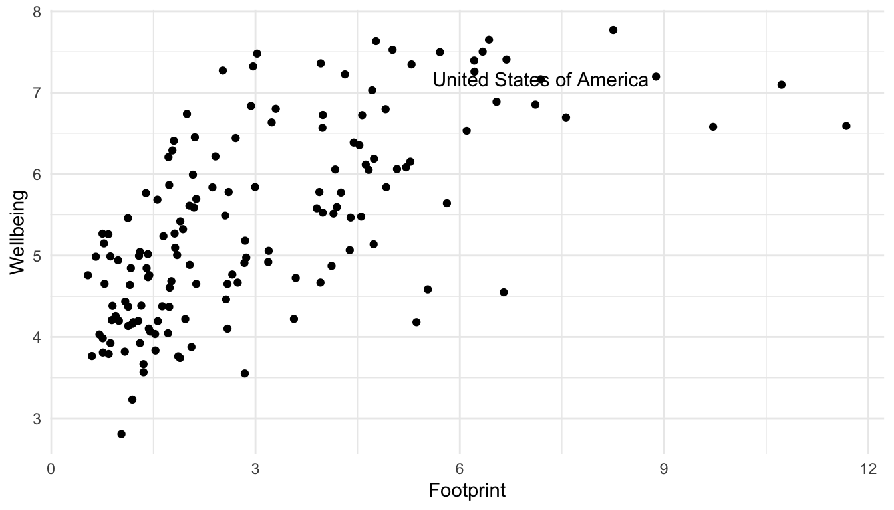

library(tidyverse)
library(here)
theme_set(theme_minimal())
hpi_df <- read_csv(here("data/hpi-tidy.csv"))
hpi_df
#> # A tibble: 151 × 11
#> HPIRank Country LifeExpectancy Wellbeing HappyLifeYears Footprint
#> <dbl> <chr> <dbl> <dbl> <dbl> <dbl>
#> 1 109 Afghanistan 48.7 4.76 29.0 0.540
#> 2 18 Albania 76.9 5.27 48.8 1.81
#> 3 26 Algeria 73.1 5.24 46.2 1.65
#> 4 127 Angola 51.1 4.21 28.2 0.891
#> 5 17 Argentina 75.9 6.44 55.0 2.71
#> 6 53 Armenia 74.2 4.37 41.9 1.73
#> # ℹ 145 more rows
#> # ℹ 5 more variables: HappyPlanetIndex <dbl>, Population <dbl>,
#> # GDPcapita <dbl>, GovernanceRank <chr>, Region <chr>5 DATA/STAT 234 Review
The primary purpose of this section is to review the most important components of STAT/DATA 234 for this course. In particular, we will focus on ggplot2 and dplyr. However, throughout the course (and even sometimes in this section), we will encounter many of the other tidyverse packages like forcats, tidyr, lubridate, and tibble.
Note
This section does not describe all of the dplyr and other tidyverse functions we will need in detail. For a more thorough review of dplyr, use the STAT 234 course materials.
5.1 Review with HPI Data (Class Prep)
The data set that we will use is the Happy Planet Index: you may have encountered this data set before, but we are using it again here because (1) it’s really cool and (2) it has a lot of nice properties for basic data visualization (variables to colour by and facet by, ways to label points that make sense, etc.).
The Happy Planet Index (HPI) is a measure of how efficiently a country uses its ecological resources to give its citizens long “happy” lives. You can read more about this data here.
The basic idea is that the HPI is a metric that computes how happy and healthy a country’s citizens are, but adjusts that by that country’s ecological footprint (how much “damage” the country does to planet Earth). Variables in the data set are:
-
HPIRank, the rank of the country’s Happy Planet Index (lower is better) -
Country, the name of the country -
LifeExpectancy, the average life expectancy of a citizen (in years) -
Wellbeing, the average well being score (on a scale from 1 - 10). See the ladder question in the documentation for how this was calculated. -
HappyLifeYears, a combination ofLifeExpectancyandWellbeing -
Footprint, the ecological footprint per person (higher footprint means the average person in the country is less ecologically friendly) -
Population, the population size of the country -
GDPcapita, the Gross Domestic Product per population -
Region, the region the country is in
Make sure the hpi-tidy.csv data set is in a /data folder in your current R Project directory. Run the code in the following chunk to read in the data:
5.1.1 Making a Scatterplot and Labeling Points
In making visualizations, we sometimes want to either highlight, by using a unique colour, size, or shape, a specific observation or we might want to label a specific observation. The observation might be an outlying point, or it might just be a point of particular interest to your audience. For example, if you’re writing an article primarily for a United States reader audience using the hpi_df data set, you might want to label the United States because your readers presumably have an interest in the country that they live in.
Let’s start by making a scatterplot of Footprint on the x-axis and Wellbeing on the y-axis to examine the relationship between countries’ carbon footprints and reported wellbeing of its citizens.
ggplot(data = hpi_df, aes(x = Footprint, y = Wellbeing)) +
geom_point()
There can be a few reasons we might want to label a point. We might be interested in a country out of personal interest or we might want to label any interesting outliers. For this example, let’s label the United States. First, we need to make a new data set that only has the United States of America observation. We can do this using filter() in the dplyr package, which only keeps certain rows, based on a condition that we provide.
hpi_us <- hpi_df |> filter(Country == "United States of America")
hpi_us
#> # A tibble: 1 × 11
#> HPIRank Country LifeExpectancy Wellbeing HappyLifeYears Footprint
#> <dbl> <chr> <dbl> <dbl> <dbl> <dbl>
#> 1 105 United States of… 78.5 7.16 61.3 7.19
#> # ℹ 5 more variables: HappyPlanetIndex <dbl>, Population <dbl>,
#> # GDPcapita <dbl>, GovernanceRank <chr>, Region <chr>Now that we have this new data set, we can use it within geom_text(). Recall that the data = argument in ggplot() carries on through all geoms unless we specify otherwise. Now is our chance to “specify otherwise” by including another data = argument within geom_text():
ggplot(data = hpi_df, aes(x = Footprint, y = Wellbeing)) +
geom_point() +
geom_text(data = hpi_us, aes(label = Country)) ## specify
## data = hpi_us so geom_text only uses the observation in hpi_usBut, it’s not that clear which of the points is actual the United States. A trick used in the R for Data Science book is to surround the points that are being labeled with an open circle using an extra geom_point() function to distinguish them and to use geom_text_repel() in the ggrepel library instead of geom_text() to “repel” the label away from the point that it’s labeling.
## install.packages("ggrepel")
library(ggrepel)
ggplot(data = hpi_df, aes(x = Footprint, y = Wellbeing)) +
geom_point() +
geom_text_repel(data = hpi_us, aes(label = Country)) +
geom_point(data = hpi_us, size = 3, shape = 1) ## create a second point that is an open circle (shape = 1) with a larger size (size = 3) to surround the United States point on the scatterplot5.1.2 Themes and Labels
To change labels and add titles to our ggplot graph, we can add + labs() to change various labels and titles throughout the plot:
ggplot(data = hpi_df, aes(x = Footprint, y = Wellbeing)) +
geom_point() +
geom_text_repel(data = hpi_us, aes(label = Country)) +
geom_point(data = hpi_us, size = 3, shape = 1) +
labs(title = "Countries with a Higher Ecological Footprint Tend to Have Citizens with Higher Wellbeing", ## add title
subtitle = "Wellbeing is on a 1-10 scale", ## add subtitle (smaller text size than the title)
caption = "Data Source: http://happyplanetindex.org/countries", ## add caption to the bottom of the figure
x = "Ecological Footprint", ## change x axis label
y = "Wellbeing") ## change y axis labelMost labels can be changed through the a labs() layer addition.
To change a base theme of a plot, simply add + theme_name-of-theme() to your plot. Themes are listed at https://ggplot2.tidyverse.org/reference/ggtheme.html.
Note
Which theme is best partially comes down to personal taste. My go-to is theme_minimal(): I love the clean look!
The purpose of the following set of exercises is for you to start reviewing some basic non-ggplot2 tidyverse functions from STAT/DATA 234. I will provide the sections that these functions were introduced in from my STAT/DATA 234 course, but feel free to use other sources! The link that I will reference is
https://highamm.github.io/ds234_quarto/03-dplyr.html
Exercise 1: For each of the core dplyr functions mutate(), arrange(), select(), slice(), filter(), group_by(), and summarise(), write a one sentence summary of the overall purpose of the function.
Exercise 2: Review mutate(). Create a new variable in hpi_df that is equal to Wellbeing / Footprint.
Exercise 3: Review mutate() and case_when(). Create a new variable in hpi_df that is equal to "80s" if LifeExp is in the 80’s, "70s" if LifeExp is in the 70s, and "Below 70" if LifeExp is less than 70.
Exercise 4. Review arrange(). Sort the hpi_df data so that the country with the highest LifeExp is in the first row and the country with the lowest LifeExp is in the last row.
Exercise 5. Review select(). Make a data frame from hpi_df that only has the variables Country and LifeExp.
Exercise 6. Review slice(). Make a data frame from hpi_df that only has the first 5 rows.
Exercise 7. Review filter(). Make a data frame from hpi_df that only has countries in the "Western World" Region.
Exercise 8. Review filter(). Make a data frame from hpi_df that only has countries with a LifeExp less than 55.
Exercise 9. Review group_by() and summarise(). Make a table of the number of countries in each Region. (Hint: recall that the n() function is the counting function in dplyr).
Exercise 10. Review group_by() and summarise(). Make a table with the maximum LifeExp in each Region.
Again, we will see non-dplyr functions as well throughout the course, but we will try to review them as they come along. As long as you have a solid dplyr base (and, of course a good ggplot2 base), you should be good to go!
5.2 More Review with Billboard Hot 100
Consider a data set from the billboard R package, called wiki_hot_100s. To access the data set, we first need to install the billboard package:
## install.packages("billboard")
library(billboard)
head(wiki_hot_100s)
#> no title artist year
#> 1 1 Theme from A Summer Place Percy Faith 1960
#> 2 2 He'll Have to Go Jim Reeves 1960
#> 3 3 Cathy's Clown The Everly Brothers 1960
#> 4 4 Running Bear Johnny Preston 1960
#> 5 5 Teen Angel Mark Dinning 1960
#> 6 6 I'm Sorry Brenda Lee 1960
tail(wiki_hot_100s)
#> no title artist year
#> 5696 95 Adventure of a Lifetime Coldplay 2016
#> 5697 96 Humble and Kind Tim McGraw 2016
#> 5698 97 Wicked Future 2016
#> 5699 98 Tiimmy Turner Desiigner 2016
#> 5700 99 See You Again Wiz Khalifa featuring Charlie Puth 2016
#> 5701 100 Perfect One Direction 2016The data set only contains a few variables:
-
no, the number on the billboard year end Top 100 (1 - 100) -
title, the title of the song -
artist, the artist of the song -
year, the year of the song
Our first goal with this data set is to create a visualization that shows the most popular artists in the 2000s decade (2000 - 2009). We will use the number of songs the artist had that were in the top 100 throughout the decade as our metric for “popularity.”
Important
In creating a more complex data visualization, it is often most helpful to begin by drawing a sketch of the visualization that we want to end up with.
We will make a sketch as a class and then use our dplyr, ggplot2, and forcats knowledge to make the visualization in R.
We will complete this exercise as a class, so make sure to check out the Missed Class GitHub page if you miss class this day.
Exercise 1. Sketch out a visualization to show the most popular artists of the decade.
Exercise 2. Use dplyr, ggplot2, forcats, and other code to make this plot.
Exercise 3. There is a minor flaw in the way that we counted up the number of hits for each artist. Examine the 2nd to last row of the original data set with tail() to look at this potential flaw. What is this flaw?
Exercise 4. Fix the issue in the previous exercise.
Exercise 5. Use this website to customize the end points of your lollipop chart. If you have time, you can explore the other customization options. Make it look fancy!
5.3 Your Turn
The 2000s is the decade of popular music that I am most familiar with, as it coincided with my middle school and high school years. However, many of you might be more interested in making this plot for the 2010s decade (2010 - 2019). But, note that the author of the billboard R package has not kept this data set up to date:
max(wiki_hot_100s$year)
#> [1] "2016"Therefore, to make this plot, we need a way to get the data from 2017, 2018, and 2019. Let’s first get the billboard hot 100 for a single year from Wikipedia : recall that we can use the rvest package to scrape a data table from a website into R. See the STAT 234 course materials for a refresher, though data scraping is not the most important topic at this point in the course. The following scrapes the billboard data from 2017 onward using an iterative approach with purrr.
Note
You are not responsible for this code, but I left it in here in case you are interested (and, you will need to copy the code and run it to complete the exercise).
library(rvest)
library(tidyverse)
## function to scrape data from wikipedia for a particular year
get_wiki_100 <- function(year) {
## same code as before, replacing 2017 with year.
url <- paste0("https://en.wikipedia.org/wiki/Billboard_Year-End_Hot_100_singles_of_", year)
h <- read_html(url)
tab <- h |> html_nodes("table")
df <- tab[[1]] |> html_table() |>
mutate(year = year)
## tell our function to return the dataframe `df`
return(df)
}
## apply the function to the following years
library(purrr)
year_list <- list(2017, 2018, 2019, 2020, 2021)
df_all <- purrr::map(year_list, get_wiki_100)
## combine the data frames
df_2017_present <- bind_rows(df_all)
df_2017_present <- df_2017_present |>
mutate(Title = str_remove_all(Title, pattern = "\"")) |> ## get rid of \ in title
rename(no = No.,
title = Title,
artist = `Artist(s)`) ## make column names match with billboard package
wiki_tibble <- as_tibble(wiki_hot_100s) |> ## convert billboard data to tibble
mutate(year = as.numeric(year),
no = as.integer(no)) ## change variable types to match with scraped data
hot100_df <- bind_rows(wiki_tibble, df_2017_present)
hot100_df
#> # A tibble: 6,201 × 4
#> no title artist year
#> <int> <chr> <chr> <dbl>
#> 1 1 Theme from A Summer Place Percy Faith 1960
#> 2 2 He'll Have to Go Jim Reeves 1960
#> 3 3 Cathy's Clown The Everly Brothers 1960
#> 4 4 Running Bear Johnny Preston 1960
#> 5 5 Teen Angel Mark Dinning 1960
#> 6 6 I'm Sorry Brenda Lee 1960
#> # ℹ 6,195 more rowsExercise 1. Use the hot100_df to make either a lollipop chart of the most popular artists of the 2010s (2010 through 2019). Important: It is easy to make this plot by copy-pasting the code we used in class and just changing the years used. However, for a better review, you should try to make this plot without looking back at the code for the 2000s plot until you get stuck.
Exercise 2. You may have used a SLU majors data set in DATA/STAT 234, but now, we will use a data set that is a little different in that it shows the major/minor combination of each student. That is, instead of each row being a major, each row is an individual student. This allows us to look at more detailed questions about what students tend to double-major or minor in. The data was obtained from Christine Zimmerman in SLU’s Institutional Research Office and contains data on all graduating students in the past 7 years.
The variables in the data set are:
-
adm_id, a unique ID assigned to each student, -
sex, the sex of the student, -
major1,major2,major3,minor1,minor2,minor3, the majors and minors of the student.
Using this data set, construct a visualization that explores gender balance within each of the majors at SLU. We will begin this exercise by sketching out what we want to create as a class.